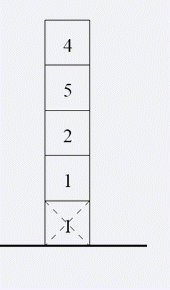
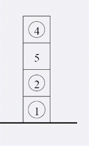

Mary在她的生日礼物中有一些积木。那些积木都是相同大小的立方体。每个积木上面都有一个数。Mary用他的 所有积木垒了一个高塔。妈妈告诉Mary游戏的目的是建一个塔，使得最多的积木在正确的位置。一个上面写有数i 的积木的正确位置是这个塔从下往上数第i个位置。Mary决定从现有的高塔中移走一些，使得有最多的积木在正确 的位置。请你告诉Mary她应该移走哪些积木。
第一行为一个数n，表示高塔的初始高度。第二行包含n个数a1,a2,...,an，表示从下到上每个积木上面的数。 (1<=n<=100000,1<=ai<=1000000)。
注意：请输出最多有多少点可以处在正确位置
5 1 1 2 5 4
3
 